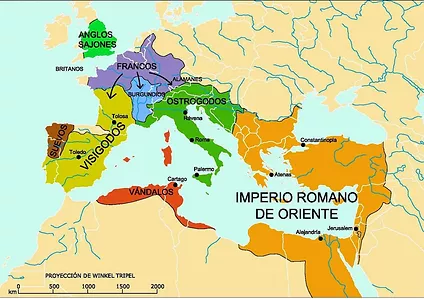
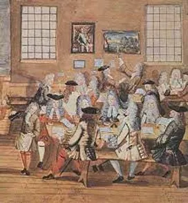

EDAD MEDIA
¿Dónde se encuentra ubicado?
El periodo de la historia europea transcurrió desde la desintegración del imperio Romano de Occidente en el siglo V hasta el siglo VX cuando se produjo la caída de Constantinopla conociéndose, así como la Edad Media. Fue considerado que la edad media fue un periodo de estancamiento cultural, ubicado cronológicamente entre la antigüedad clásica y el renacimiento, por eso es conocida como una época de oscuridad. Y está a su vez se dividió en dos periodos (La alta edad media siglo V al XI) y (La baja edad media siglo XII al XV).
Economía de la edad media
La principal actividad económica de la Edad Media fue: la agricultura y la ganadería . La cual era controlada por el sistema feudal, lo cual se traduce que eran tierra que estaban en manos de la realeza, nobleza y el clero y los integrantes de las otras clases sociales, como los campesinos quienes eran los encargados de trabajarla para su sostenimiento .
Organización social y política
La sociedad en la época medieval estaba conformada por dos clases sociales
- La clase alta: Está representada por una minoría de la población y estaba conformada por la nobleza, el rey, los señores feudales más acaudalados, el clero, los sacerdotes y obispos.
- La clase baja: Está representada por la mayoría de la población y estaba conformada por campesinos y artesanos, muchos de ellos libres, y por los esclavos que eran considerados propiedad de la nobleza.
Religión
El cristianismo se había convertido en la religión oficial de todo el mundo latino. Los principios del catolicismo influyeron en todas las órdenes de la vida medieval, lo que obedeció a diversas circunstancias y dejó profundas huellas en el mundo occidental. La Edad Media fue una época profundamente religiosa. Por eso, la Iglesia católica tuvo mucha influencia sobre la sociedad, y aunque existían otros credos, en el siglo XI Europa era en gran parte cristiana.
Organización territorial
La nuevas ciudades estaban construida por una plaza donde se celebraba el comercio semanal, a su costado se encontraba la iglesia, el palacio de ayuntamiento y las casas de los principales gremios y de los patricios. como el área urbana eran reducidas, las calles eran estrechas y las casas angostas y de varios pisos.
Artesanos, gremios y ferias
La unión de artesanos que trabajaban en un mismo oficio dio origen a los gremios que eran asociaciones profesionales para la defensa de los intereses comunes de sus miembros. las ferias fueron lugares donde los mercaderes se reunían para intercambiar productos
Orígenes del Capitalismo
Es importante señalar que durante este periodo se dieron las primeras manifestaciones del capitalismo, principalmente en las ciudades italianas y los países bajos. El comercio que se genero después de las cruzadas fue la fuente del Capitalismo.
La literatura medieval
La literatura medieval exaltó el ideal caballeresco en los llamados "cantares de gesta", donde se contaban las hazañas de los guerreros de las épocas. Estos poemas fueron compuestos por juglares y cantores que recorrían las diferentes cortes europeas y luego se fueron transmitiendo oralmente. También deambulaban por los camino los trovadores músicos ambulantes que le cantaban a la mujer y al amor.
Las universidades
La universidad medieval eran instituciones de educación que comprendían un conjunto de maestros y discípulos que cultivaban la enseñanza, esta dependía del papa o del soberano (rey) abarcaban ramas como la teología el derecho y la medicina.
El arte medieval
Dos estilos artísticos se sucedieron durante la edad media el romántico y el gótico. El arte romántico era un estilo sobrio y austero, con paredes anchas y reducidas aberturas. el gótico fue fundamental un arte urbano caracterizado por la construcción de grandes catedrales que se distinguen por su marcada verticalidad y la gran luminosidad interior debido a los grandes ventanales adornados con hermosas cristalerías llamadas comúnmente vitraux.
Inventos
Algunos de los inventos que encontramos de está civilización son:
-
El reloj mécanico
Los dispositivos para medir el tiempo eran conocidos desde la Antigüedad pero no fue hasta la Media cuando la tecnología permitió que los relojes mecánicos pudieran medir con exactitud el tiempo. El conocimiento no solo de que hora era, sino en que minuto y segundo estábamos, cambiaría la forma en que la gente organizaba sus días y sus horarios de trabajo, especialmente en áreas urbanas.
-
La imprenta
En China se desarrolló en el siglo XI la tecnología para poder imprimir sobre materiales como el papel, pero fue en el siglo XV, a caballo entre la Edad Media y la Moderna, cuando el alemán Johannes Gutenberg y su imprenta inició una nueva era en la producción de libros en cantidades importantes.
-
Los arbotantes
Una de las innovaciones arquitectónicas de la arquitectura gótica del s. XII fueron los arbotantes, que permitían a las iglesias tener unos techos mucho más altos, muros más ligeros y ventanas más grandes. Esta novedad dentro de la construcción sería una influencia en el diseño arquitectónico en los tiempos modernos, permitiendo la construcción de edificios más espaciosos y grandes.

-
El papel moneda
La primera vez que se tiene noticia del uso del papel moneda es en el s. VII. Fue un gran e importante avance respecto a las monedas hechas de metales preciosos, ya que era mucho más fácil de transportar con el consiguiente beneficio para los mercaderes. Sin embargo, el concepto de otorgar valor a una hoja de papel marcada no se hizo popular. Los Mongoles en el siglo XIII trataron de introducir el papel moneda en Oriente Medio pero fue un fracaso. Los billetes de banco no circularían por Europa hasta el s. XVII.
-
Las cafeterías
La costumbre de beber café surgió hacia el siglo XV en la península arábiga. Allí y en tierras otomanas se hicieron muy populares las cafeterías. Estos establecimientos no llegarían a Europa hasta principios de la Edad Moderna, cambiando no solo el modo cómo la gente comía y bebía, sino creando nuevas maneras de interacción social.